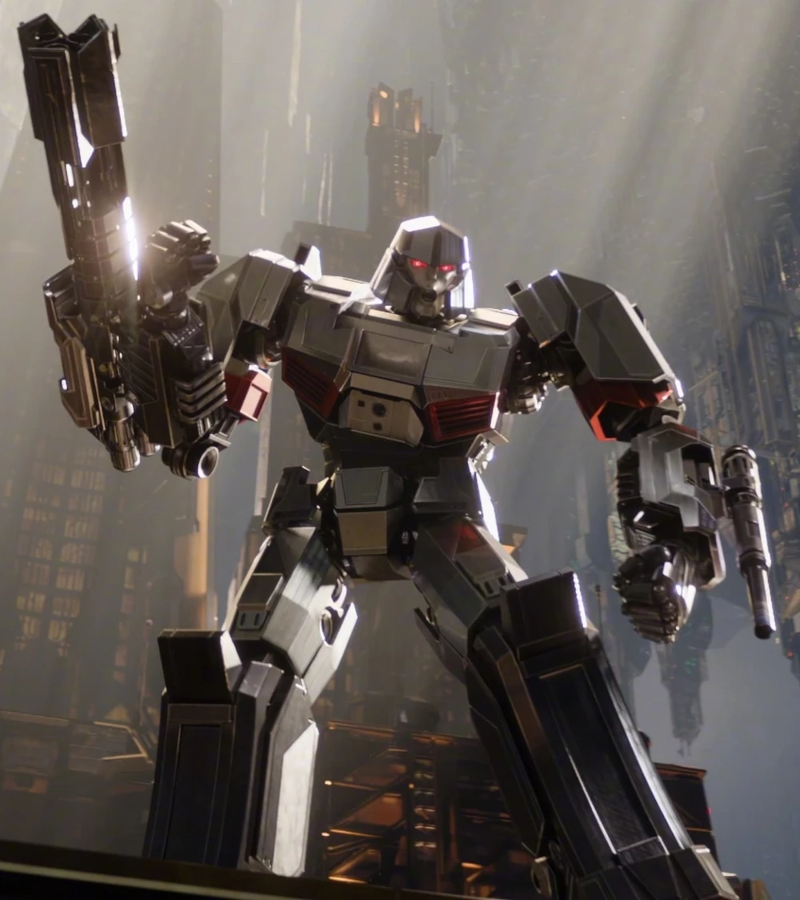
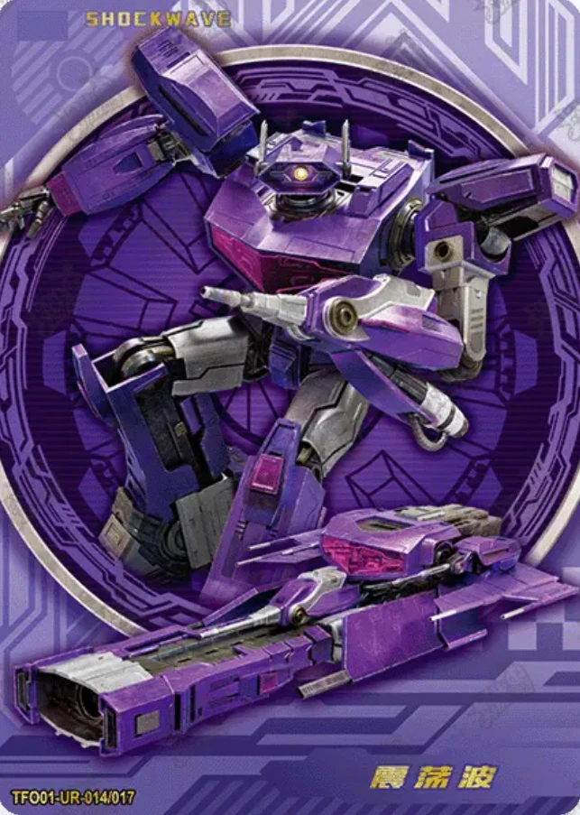

My favorite characters in Transformers Once
Here are my favorite characters in Transformers Once
| Character | info | Abilities |
|---|---|---|
 |
He was known as Orion Pax before and his job was being an Energon Miners |
He can transform into a cybertronian truck. He has flame throwers that can also act as a boost when in truck mode. Can form two energy axes on both of his hands and throw them and still keep it. Strong enough to fend off three powerful opponents by himself. |
|  | He was a humbled energon miner that were bestfriends with Orion Pax. Until he learned the truth about Sentinel he was a good person. Until he found out what Sentinel really was he was enraged and killed him to take his cog and create a faction called the Decepticons |
He can transform into a tank |
|  | He has a really cool design thats why i like him He wasnt supposed to have emotion in this movie due to lore but It was also still a good idea to let him keep it because of just one scene where he got scared by Elita One |
Hes just a jet. More like an airborn tank and is really strong Scared of women |